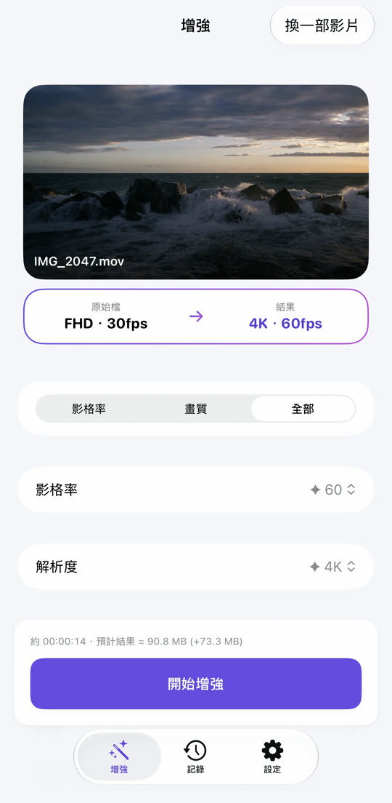
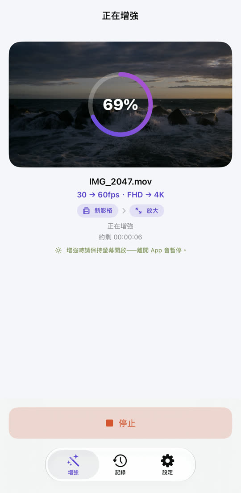
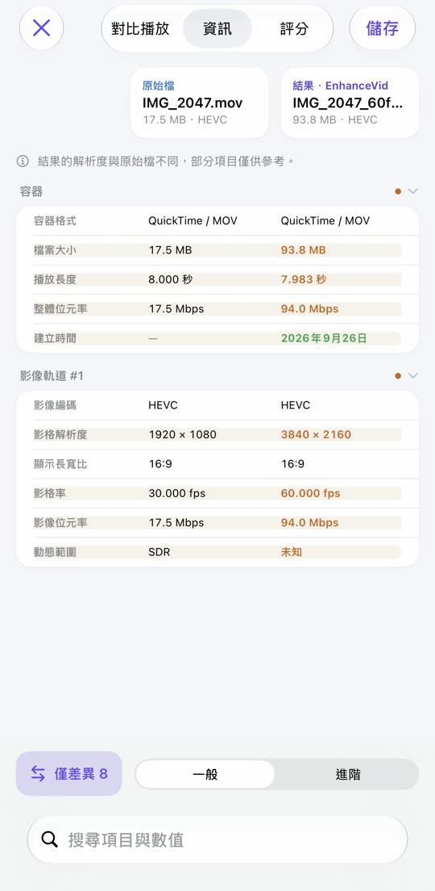

EnhanceVid
卡頓的影片變流暢，
模糊的影片變清晰。
30fps 變 60fps，Full HD 變 4K。在原始影格之間產生新影格，並提高解析度讓畫面更清晰——所有處理都在你的 iPhone 上完成，原始檔保持不變，結果另存為新影片。
在 App Store 下載免費 · iOS 26 或以上 · iPhone · iPad · Apple 晶片 Mac

告別模糊，細節更清晰。
使用 Apple MetalFX 放大提高解析度。左右拖動中間的線來比較。

 原始檔增強後
原始檔增強後
⇆
範例圖片——低解析度原圖放大後的效果與增強後的效果並排呈現。
卡頓的動作，變得順暢。
在原始影格之間計算並插入新影格。場景切換處不會強行混合，不會出現不自然的殘影。
30fps
60fps
為方便看出差異，這裡誇大了動作。
選擇、開始、比較、儲存。


需要的功能，一應俱全。
降噪
讓暗光下拍攝、滿是雜訊的影片變乾淨。在支援的裝置上可用。
升降自由
4K 60fps 轉 30fps，4K 轉 Full HD——也可以降低。
親眼比較
並排播放、規格表、畫質評分（PSNR、SSIM，可選 VMAF）。
HDR 維持不變
iPhone 拍攝的 HDR、杜比視界影片，結果仍是 HDR。
多種檔案
照片圖庫與「檔案」App 中的影片，也支援 MKV、WebM、AVI。
原始檔不變
結果另存為新影片，不會修改或刪除原始檔。
你的影片只留在你的裝置上
不會上傳任何影片，也不需要帳號。免費，由廣告支持—— 隱私